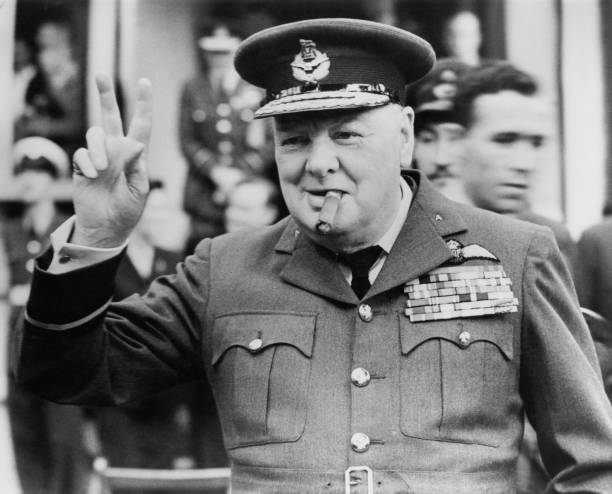
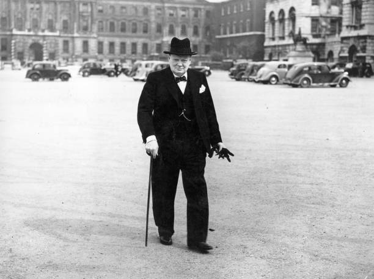
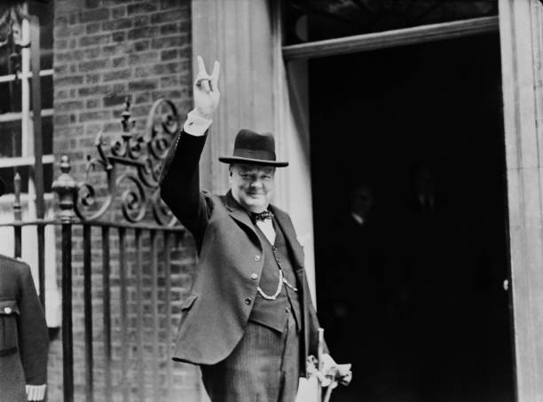
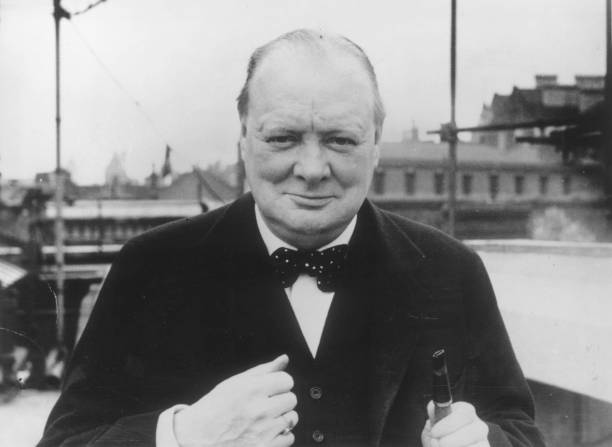
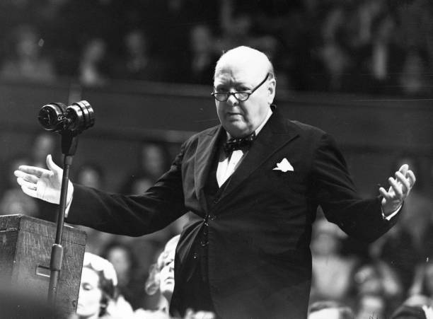
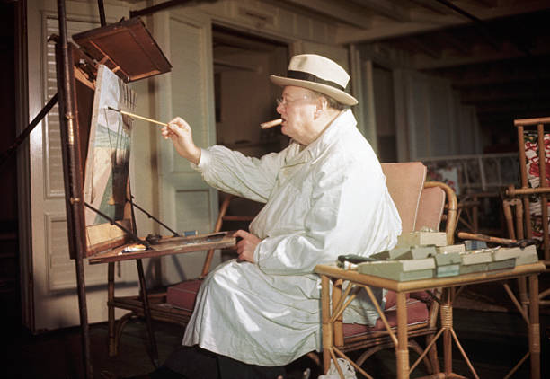
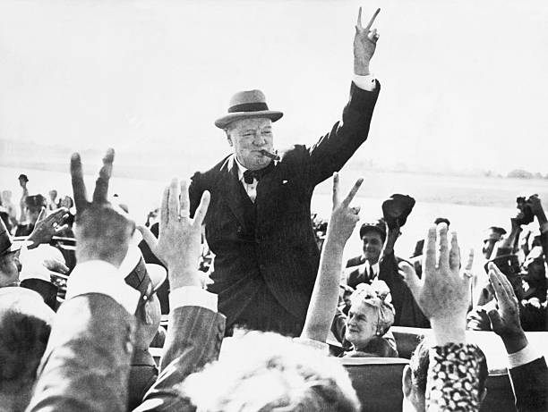
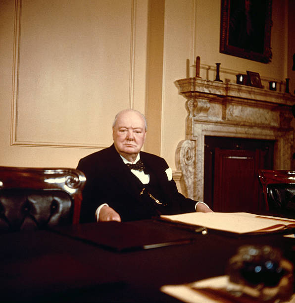
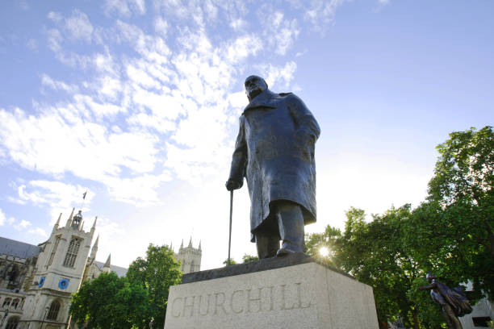

Chuchill in Croydon

Arriving at work

Churchill's "V" Sign

Churchill

Churchill giving a speech

Churchill at ease, enjoying painting

Churchill making the Victory sign

Sir Winston Churchill, Britain's Prime Minister, seated at his desk on his 80th birthday.

Churchill Statue at parliament square